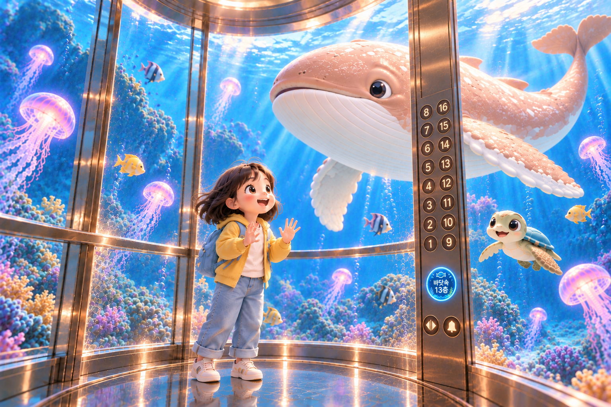
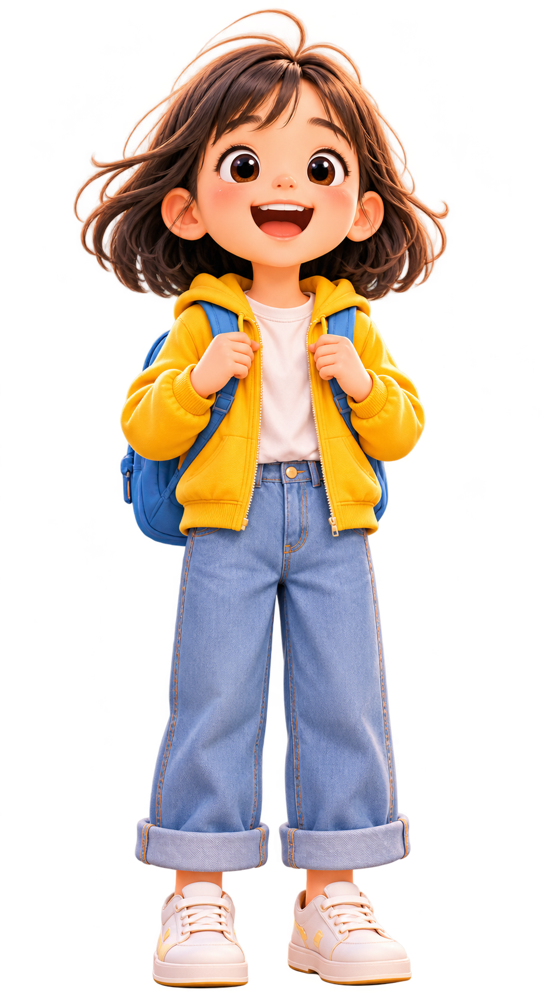
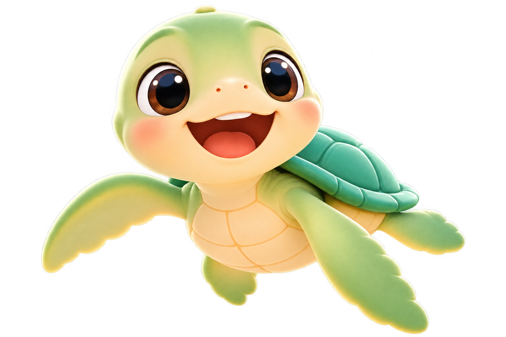
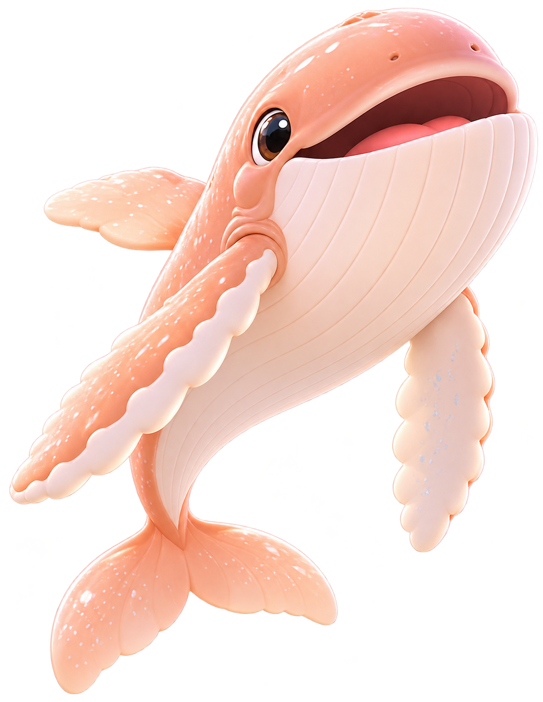

기획 의도
평범한 엘리베이터 버튼 하나가 낯선 세계로 향하는 입구가 된다면 어떨까 하는 상상에서 출발했습니다. 나루가 바닷속 13층에서 거북이 또리와 고래 쿠우를 만나는 짧은 여정을 통해 새로운 곳을 발견하는 아이의 놀라움과 설렘을 담았습니다.
SELECTED WORK 02 / AI SHORT FILM
엘리베이터 문이 열리자,
바닷속의 새로운 친구들이 기다리고 있었어요.
나루가 또리와 쿠우를 만나 바닷속 13층으로 향하는 29초짜리 세로형 AI 영상입니다. 장면의 흐름과 캐릭터의 표정, 바다의 색감을 하나의 짧은 모험으로 엮었습니다.
영상 보기
완성 영상 보기아이들이 먼저 상상하고, AI 영상을 보며 자신의 이야기를 발전시키는 활동입니다.
평범한 엘리베이터가 바닷속 모험의 시작점이 됩니다.
평범한 엘리베이터 버튼 하나가 낯선 세계로 향하는 입구가 된다면 어떨까 하는 상상에서 출발했습니다. 나루가 바닷속 13층에서 거북이 또리와 고래 쿠우를 만나는 짧은 여정을 통해 새로운 곳을 발견하는 아이의 놀라움과 설렘을 담았습니다.
엘리베이터 문 너머 펼쳐지는 바닷속 모험을 29초 세로형 영상으로 구성했습니다. 나루의 노란 후드와 푸른 바다의 대비로 주인공을 또렷하게 보여주고, 또리와 쿠우의 표정과 움직임으로 만남의 즐거움을 전했습니다. 캐릭터 시트와 스토리보드로 장면의 기준을 세운 뒤 Google Flow를 활용해 영상으로 구현했습니다.
재생 버튼을 누르면 소리와 함께 감상할 수 있습니다.
AI 영상 제작 · Google Flow
호기심 많은 나루와 다정한 바다 친구들. 각자의 성격과 이야기가 한 장면 안에서 만납니다.

새로운 곳을 탐험하고 동물 친구들을 만나는 걸 좋아하는 밝고 씩씩한 아이예요.
호기심 · 모험 · 발견
활발하고 다정한 아기 바다거북. 나루와 함께 새 친구를 만나러 헤엄쳐요.
활발함 · 친절 · 호기심
온순하고 든든한 바다 친구. 나루의 모험을 곁에서 응원하고 함께 노래해요.
다정함 · 노래 · 바다정면에서 뒷모습까지, 세 친구가 장면마다 같은 모습으로 등장하도록 여러 방향에서 디자인했습니다.
같은 순간에도 각기 다른 반응을 보이는 캐릭터의 감정을 살펴보세요.
각 이미지를 누르면 원본 캐릭터 디자인 시트를 크게 볼 수 있습니다.